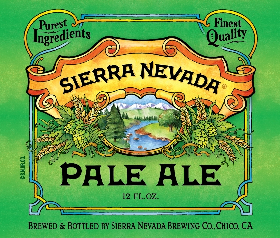
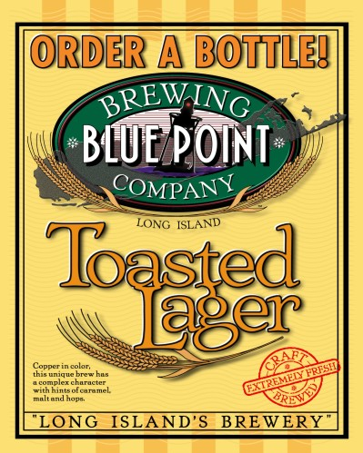
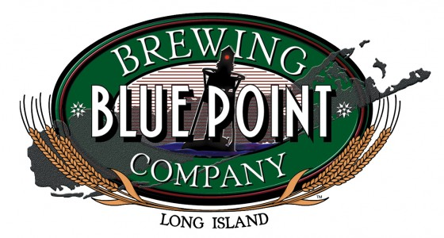

-

Pale Ale began as a home brewer's dream, grew into an icon, and inspired countless brewers to follow a passion of their own. Its unique piney and grapefruit aromas from the use of whole-cone American hops have fascinated beer drinkers for decades and made this beer a classic, yet it remains new, complex and surprising to thousands of beer drinkers every day. It is-as it always has been-all natural, bottle conditioned and refreshingly bold.
-

Sierra Nevada Brewing Co. was established in 1980 by homebrewers Ken Grossman and Paul Camusi.Located in Chico, California, Sierra Nevada Brewing is one of the top craft breweries currently operating in the United States. Sierra Nevada's Pale Ale is the second best-selling craft beer in the United States, behind the Boston Beer Company's Samuel Adams Boston Lager. It is currently the sixth-largest brewing company in the United States.The brewery produced 786,000 barrels of beer in 2010.
-

Blue Point Brewing's Toasted Lager is our flagship product. Copper in color this brew is made from Six different malts including: English Pale, Crystal, Munich, Carapils, Wheat and Belgian Caravienna. Toasted Lager displays a balanced flavor of malt and hop which makes it easy drinking. Special lager yeast is used to produce that long lasting, smooth finish. The "toasted" part of the name refers to our direct-fire brew kettle; hot flames imparts a toasted flavor to our most popular microbrew.
-

Blue Point Brewing Company is a microbrewery located on Long Island, in Patchogue, New York. The brewery offers a variety of year-round beers, and several seasonal brews, as well as a 'tasting room' which is open to the public on Thursdays, Fridays, and Saturdays. The largest craft brewery on Long Island, Blue Point is currently ranked #34 in the Top 50 Craft Breweries in the U.S. The brewery hosts an annual Cask Ale Festival, concerts and other events in the brew yard.